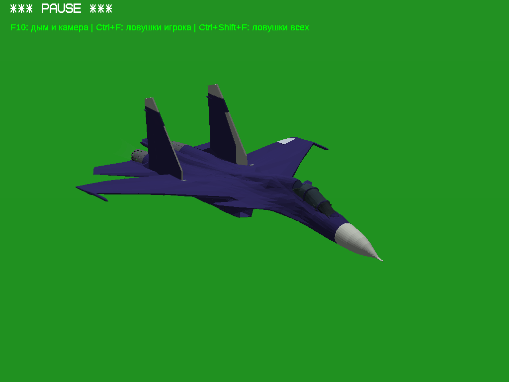
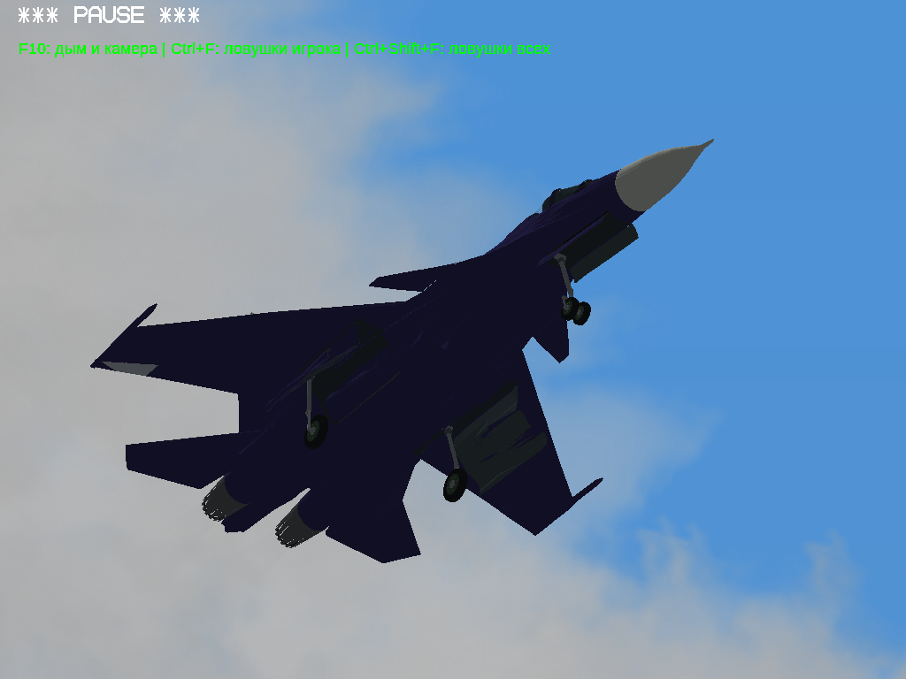
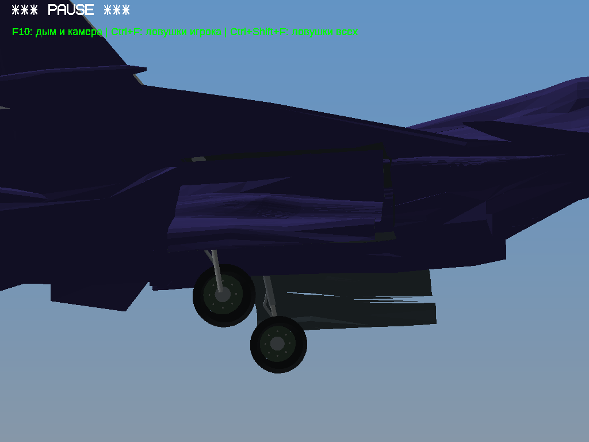
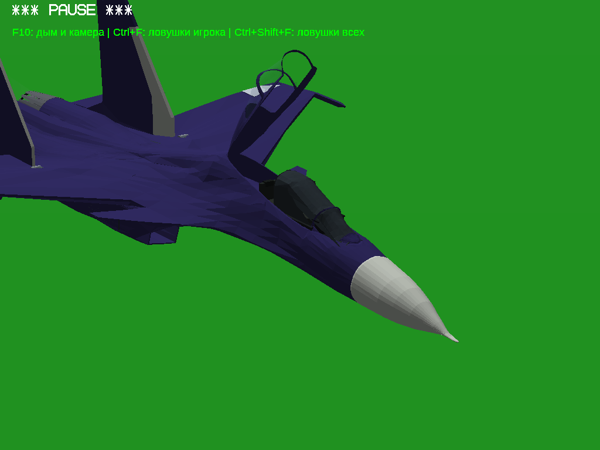
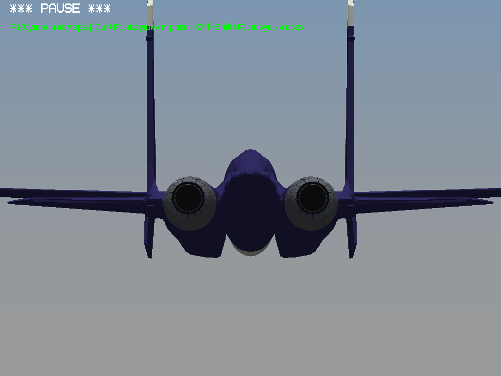
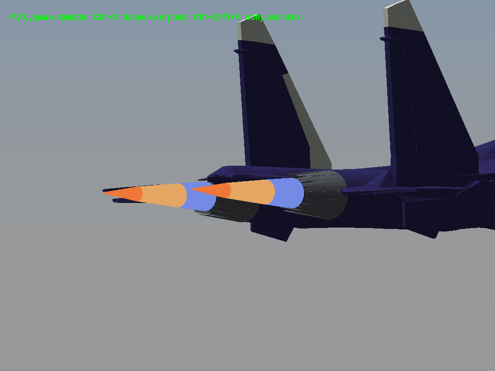
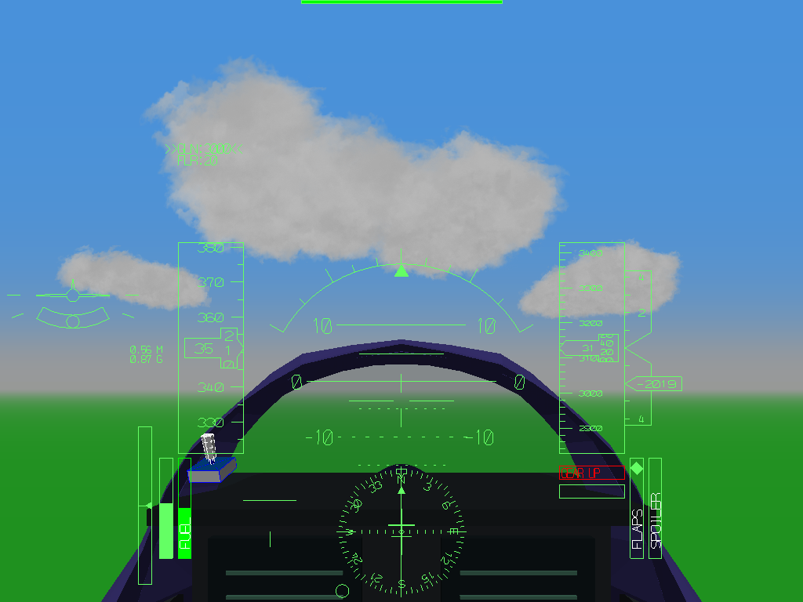
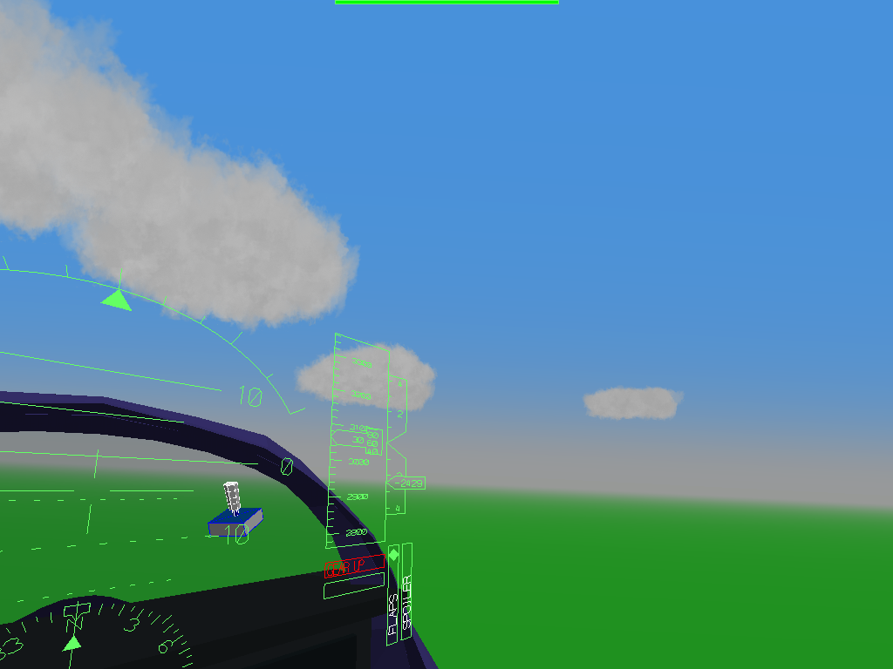
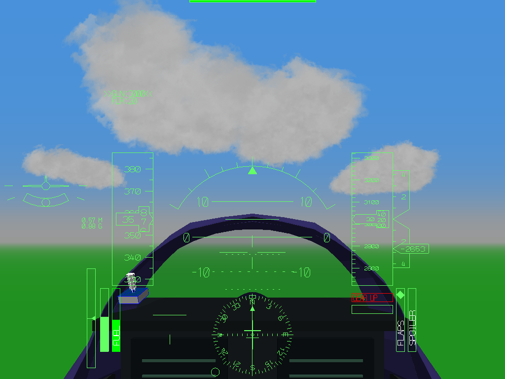

Один архив для Windows32/64, с остальными самолётами предыдущей сборки. Распакуйте всё в новую папку и запустите Play_Su30SM.bat. Он выбирает архитектуру автоматически. Есть отдельные варианты32/64.
Поверхность Су30 полностью без сглаживания. Видимая геометрия не децимировалась; правые сопловые детали заменены зеркальными копиями левых по просьбе пользователя. Оба сопла имеют32одинаковые пары деталей и21состояние, диапазон радиуса1:1.35. Добавлены одинаковые тёмные горловины; пламя и слабый выхлоп привязаны к срезам.
Внешние коробки основных ниш0.5м удалены. Изменены стойки, шарниры, створки и положение убранных колёс. Фонарь открывается до55°, стекло имеет непрозрачность42/255. Глаз пилота расположен внутри фонаря(0,1.18,5.55); добавлен простой интерьер и исправлен кэш трансформаций кабины.
Управление: F1 — кабина, F2 — внешний вид. В кабине зажмите ЛКМ или ПКМ и двигайте мышью. Дважды нажмите Пробел для возврата вперёд; в кабине Пробел теперь не стреляет. G — шасси; Alt+5 — фонарь на стоянке/малой скорости; Q/A — тяга; Tab — форсаж.
Обзор работает общим кодом для всех самолётов; реальные ЛКМ и двойной Пробел проверены на Су30 и Су27. Записаны настоящий циклG и работа двигателя в Wine64/OpenGL. Отдельная минимальная проверка Windows32. Данные проверок.
Это тест для полётов и визуальной приёмки. Стойки/ниши — игровое приближение, динамика пока от Су27; полного устранения всех внутренних контактов не заявляем. Интерьер простой, приборы/HUD стандартные; это не заводская приборная панель. Слабый выхлоп — прозрачная геометрия, не преломление горячего воздуха.









Исходная модель: HappyMexicano7 / Su-30SM, CC BY4.0. Авторство, лицензия, исходныйGLB, конвертер и полный изменённый движок сохранены в поставке исходников. Фотографии-референсы не выдаются за игровые кадры.